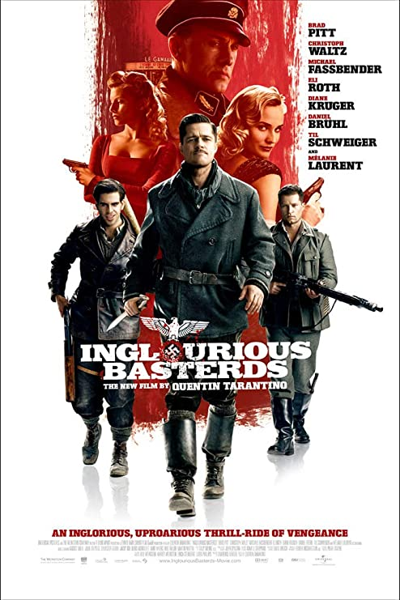
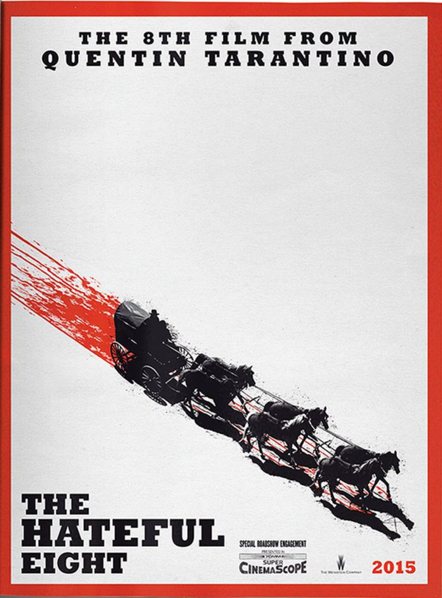

Blockbuster Films
Inglorious Basterds
Tarantino's first true blockbuster film was Inglorious Basterds, which is one of his most well known and most loved film he's made. This film features an enormous cast, great special effects, some of the best camerawork and editing in film, and of course one of the best Tarantino scripts to date. While originally he wanted to make this into a mini-series, another director approached him and told him how disappointed he was that his next project wasn't in theaters. Therefore, he re-wrote the script and made it very different. Regardless of the story being in film or tv format, it was widely accepted and loved. In fact, the film's budget was $70 million and the film grossed $321.4 million!
Django Unchained

He then followed up with his first western Django Unchained, which features some of the best acting in Tarantino's films to date. It also features a lot larger sets, stuns, and pyrotechnics, which gets shown off in many scenes in the film. While the film cost $100 million to make, this film grossed $435.4 million making this Tarantino's highest grossing film to date!
The Hateful Eight
He then moved on to make another western film called The Hateful Eight. However, this film differed heavily from the Django Unchained, as this film primarily takes place in one cabin. Therefore, this film is a lot more condensed as far as set and the scale of the story as well. While certain fans of Tarantino raved about the film, it had plenty of poor reviews as well from fans. This is mainly due to the gratuitous violence, the slow movie story, and some viewers felt the character were to plain. Nonetheless, the film grossed about $155.8 million and only cost roughly $50 million to make.